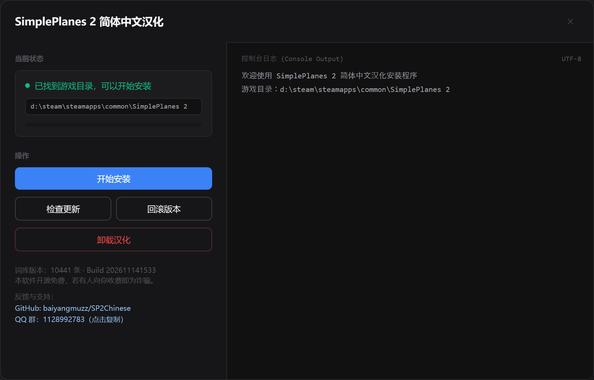

SimplePlanes 2 简体中文汉化
为 SimplePlanes 2 提供完整的简体中文界面。游戏运行时替换界面、聊天和载具说明文本，词库共 10,422 条。免费、开源，一个安装器即可完成。

特性
只改界面显示，不碰游戏逻辑；安装过程可校验、可回滚。
运行时替换
通过 BepInEx 在游戏运行时替换文本，覆盖界面、聊天与载具说明。
词库热更新
词库可在游戏内更新。游戏版本变动后，等待新词库即可，无需重装。
校验与自动回滚
写入前校验包体，写入后逐个核对 SHA256。任一步失败，自动恢复到安装前的状态。
备份与恢复
安装器保留历史备份，可在「回滚版本」中选择任一版本恢复。
自动定位游戏
自动查找 Steam 游戏库中的 SimplePlanes 2，找不到时再手动选择目录。
与其它模组共存
不会覆盖已有的 BepInEx 和其它模组。卸载时只移走汉化插件。
安装
安装前请先退出游戏。
- 下载安装器。在下方下载
SP2Chinese-Setup-v1.7.1.exe。Release 页面里不要选 Source code，那是源码包。 - 运行并授权。双击运行，在管理员授权提示中选「是」。
- 开始安装。点「开始安装」，显示「安装完成」后即可进入游戏。
- 需要卸载时再次运行安装器，点「卸载汉化」。
- 系统
- Windows 10 / 11
- 运行库
- .NET Framework 4.8（系统自带）
- 游戏
- SimplePlanes 2
更新日志
v1.7.12026-11-14
- 新增 exe 安装器：双击安装，自动识别 Steam 游戏库。
- 写入前后均做 SHA256 校验，失败自动回滚。
- 支持备份、历史版本恢复与安装器自更新。
- 新增
--selftest自检参数。 - 继续提供 zip 包，用于脚本与 CI 部署。
- 词库 10,422 条（8,675 已翻译，1,718 保留英文），游戏内热更新机制不变。
常见问题
Windows 提示「已保护你的电脑」怎么办？
安装器尚未做代码签名，Windows 会对未签名程序显示此提示。点「更多信息」→「仍要运行」即可。源码和打包脚本都在仓库中，可以自行编译比对。
装完进游戏还是英文？
汉化通过 BepInEx 在运行时替换文本，建议从 Steam 启动游戏。如果装了其它 BepInEx 插件，可能存在冲突，请先查看 BepInEx\LogOutput.log。
怎么卸载？
再次运行安装器，点「卸载汉化」。插件目录会被移到 BepInEx\_mod_backups，不会删除文件；BepInEx 本体和其它模组不受影响。
游戏更新后还能用吗？
多数情况下可以直接使用。游戏大版本更新导致部分文本对不上时，等待新版词库或插件即可。词库支持游戏内热更新，无需重装。
会影响联机吗？
汉化只替换界面文本，不改动游戏逻辑。联机时请遵守服务器规则；与其它模组同时使用时，出问题的概率会更高。
自动更新失败了怎么办？
自动更新需要访问 GitHub，网络不通时会失败。这时回到本页下载新版覆盖安装即可，词库和备份都会保留。
需要付费吗？
不需要。本项目开源免费，官方渠道只有 GitHub 和 Gitee。如果有人向你收费，那不是我们，请直接举报。